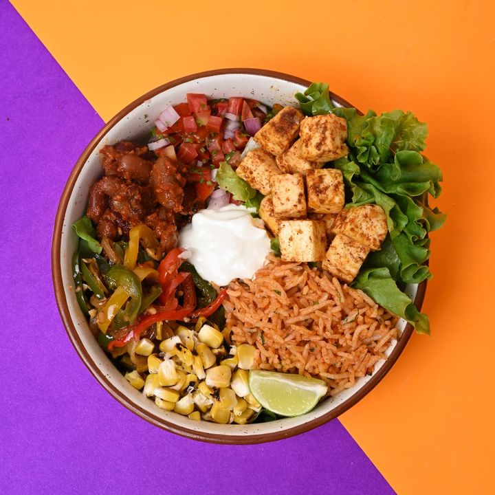

Why Zoco exists
I've been passionate about food since I was a kid in the kitchen. A decade into a corporate career, I found it harder and harder to hit my protein goals without giving up on taste, or my sanity.
Having a cook meant managing their schedule, keeping prep ready, and answering the dreaded "khane mein kya banau" three times a day. Meal prepping meant eating the same thing across multiple meals, and like most Indians, I was used to eating fresh food, not reheated food.
Somewhere along the way, I started making bowls and rolls for my own family as a regular meal option. I noticed my friends and family gravitated toward the same thing: colorful, healthy food that's rich in protein and fiber, and doesn't feel like a chore to eat.
I wanted to build a brand that makes fresh, healthy food accessible to busy working professionals and college students, without it being boring or expensive. That's how Zoco Kitchens happened.